Reporting
I documenti di Reporting possono essere trovati o su XStore o, per quelli generati da OneLRA sul ToolKit, selezionando l'icona Reporting
15.1 Report Fatturato
Accedere al Back Office in XStore e selezionare Report e poi Cruscotto.
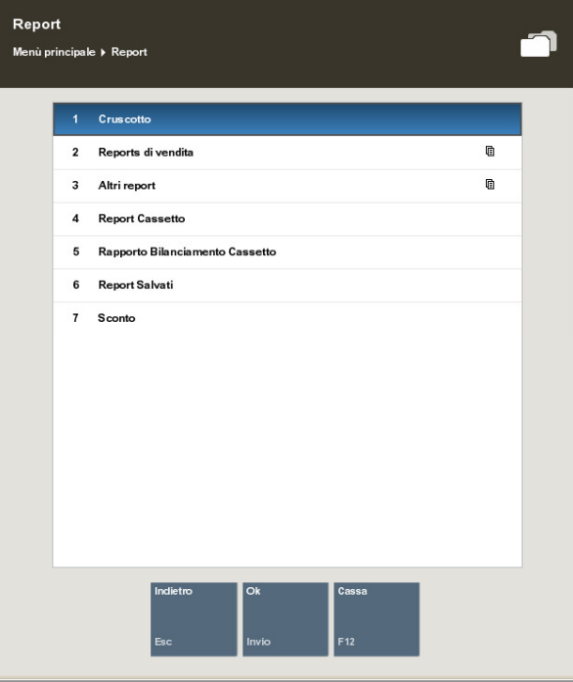
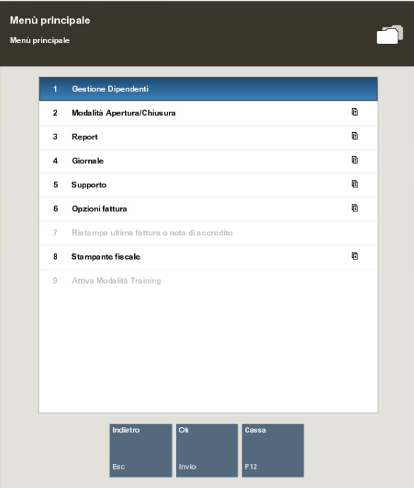
Seleziona Vendite del Giorno.
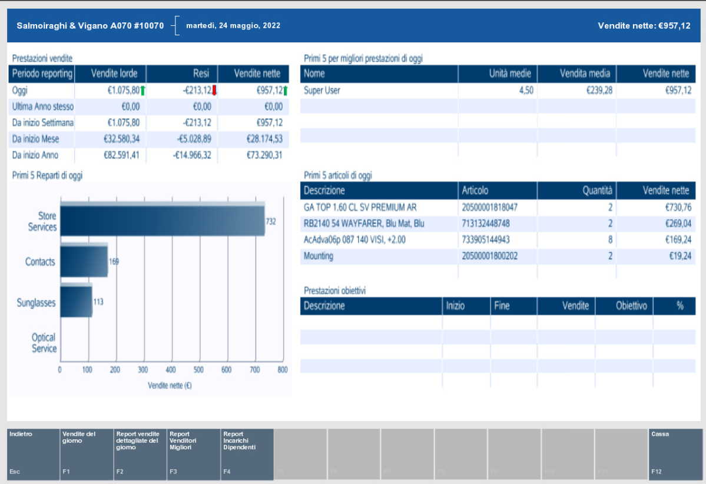
È possibile visualizzare il report filtrando per data, scegliere come Opzione di visualizzazione "In base a reparto" e scegliere se si vuole vedere anche il grafico. Successivamente selezionare Genera Report.
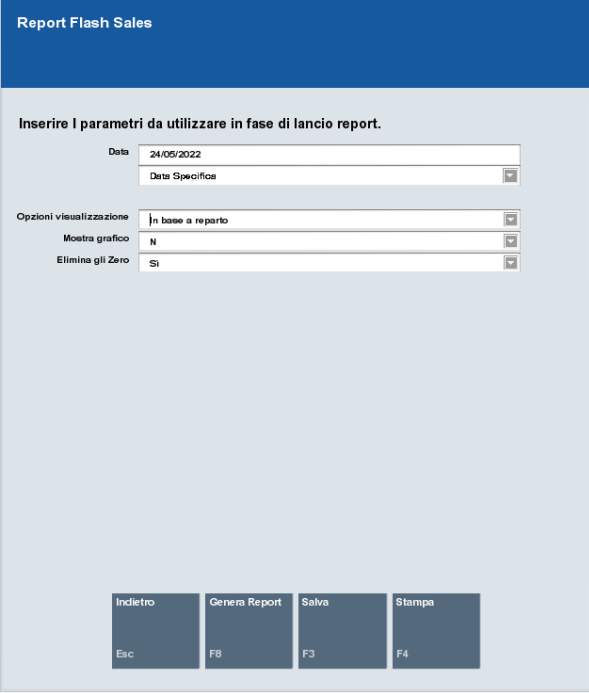
Le vendite sono rappresentate al netto dell'IVA.
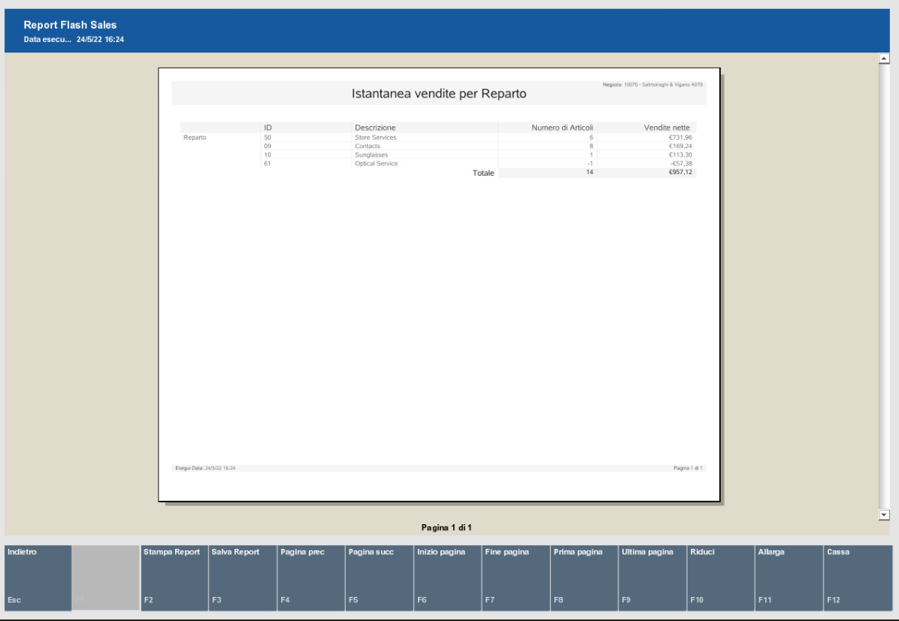
15.2 Registro Corrispettivi
Questo report non è presente su XStore.
15.3 Riepilogo Giornaliero
Il riepilogo giornaliero viene stampato ogni sera con il Closure Report generato al momento della chiusura del Negozio. N.B. Nel caso in cui per qualche problema non fosse stato possibile produrre il report di Chiusura cassa in fase di chiusura, sarà possibile ristamparlo accedendo a Back office -- Report -- Report salvati. Qui troverete l'elenco dei Daily report prodotti con l'orario. Selezionando quello del giorno d'interesse e dell'orario di chiusura, troverete quello corretto e lo potrete ristampare
15.4 Scontrino Cassa e Giornale elettronico
Il riepilogo degli scontrini cassa può essere scaricato da XStore, selezionando Giornale dal menù principale e poi Report Giornale.
Il Giornale elettronico è uno strumento che vi permetterà di vedere tutte le operazioni eseguite su Ciao!, vi sono diversi criteri per filtrare i dati in modo da cercare la transazione che serve.
Molto utile è anche la possibilità di visualizzare tutti i dettagli della transazione (scontrino, modalità di pagamento...), e di conoscere anche lo stato in cui si è bloccata la transazione, o se è stata eliminata.
Sempre all'interno del giornale si ha anche la possibilità di poter ristampare la ricevuta, sia via mail che tramite stampa.
Inoltre, è possibile anche trovare la fattura i caso fosse stata creata e stamparla, ma anche crearla da zero, in caso non si fosse ancora effettuata, naturalmente sempre all'interno della stessa giornata
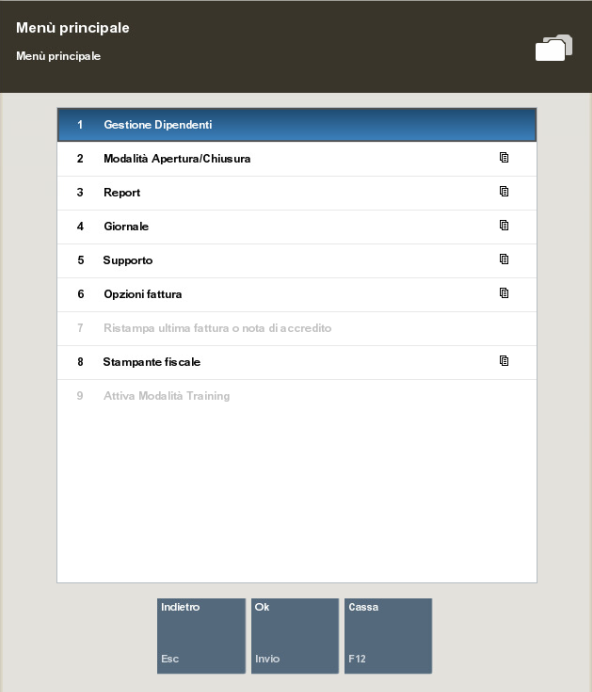
15.5 TX Sconto Discrezionale
È possibile accedere al report Tx Sconto Discrezionale accedendo a XStore e selezionando Report e poi Sconto.
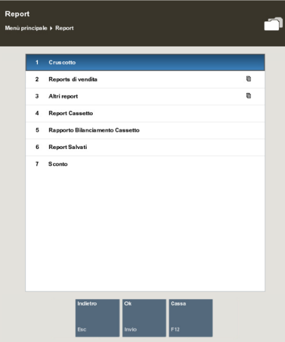
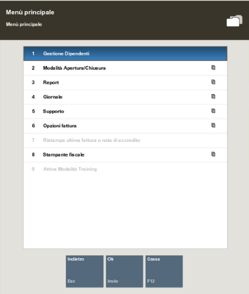
I report WO Aperti, Work Order, Work Order Annullati, Percorso cliente, Dettaglio clienti vengono generati da OneLRA e sono accessibili dal ToolKit nell'icona Reporting.[]
15.6 Reporting cassaforte
Per tenere traccia di tutte le attività di spostamento tra le casse durante la giornata è possibile andare nella sezione Giornale, poi Report giornale.
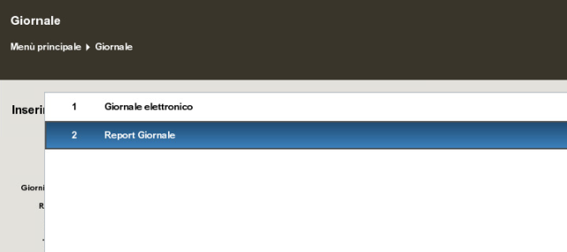
Qui si ha la possibilità di filtrare la transazione specifica, per vedere quella relativa alla cassaforte bisogna selezionare: Controlla gara
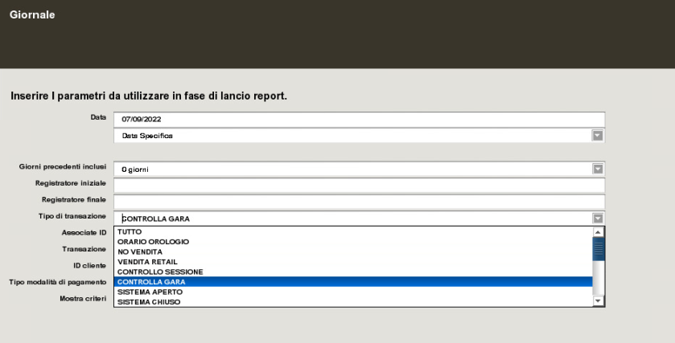
Una volta premuto, si creerà la pagina di giornale con tutte le attività della giornata.
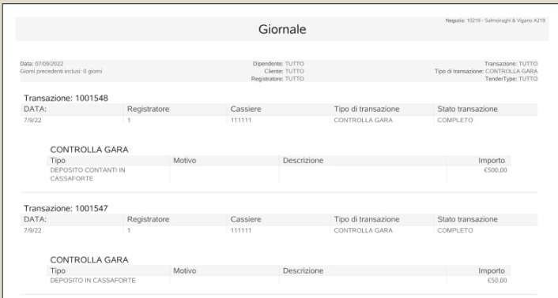